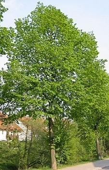

|
| Die Sommerlinde ist in Europa zu Hause.
 | Die Sommerlinde wächst in Laubwäldern, oft in den Bergen.
Sie ist empfindlich gegen Luftverschmutzung. Daher wächst sie in Städten nur schlecht.
Die großen alten Dorflinden sind oft Sommerlinden.
In Städten wird häufig die Holländische Linde gepflanzt.
Sie ist eine Kreuzung zwischen der Sommerlinde und der Winterlinde.
Sie ist der Sommerlinde sehr ähnlich, aber viel unempfindlicher.
|